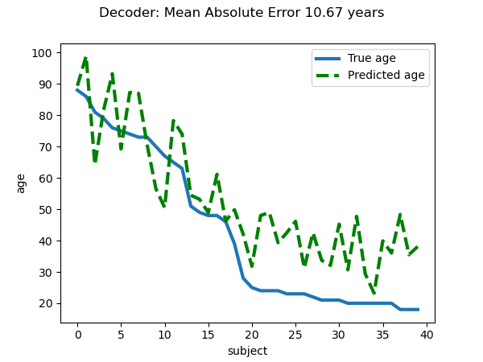
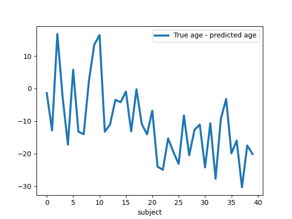

Note
Click here to download the full example code or to run this example in your browser via Binder
Voxel-Based Morphometry on Oasis dataset#
This example uses Voxel-Based Morphometry (VBM) to study the relationship between aging and gray matter density.
The data come from the OASIS project. If you use it, you need to agree with the data usage agreement available on the website.
It has been run through a standard VBM pipeline (using SPM8 and NewSegment) to create VBM maps, which we study here.
Predictive modeling analysis: VBM bio-markers of aging?#
We run a standard SVM-ANOVA nilearn pipeline to predict age from the VBM data. We use only 100 subjects from the OASIS dataset to limit the memory usage.
Note that for an actual predictive modeling study of aging, the study should be ran on the full set of subjects. Also, all parameters should be set by cross-validation. This includes the smoothing applied to the data and the number of features selected by the ANOVA step. Indeed, even these data-preparation parameter impact significantly the prediction score.
Also, parameters such as the smoothing should be applied to the data and the number of features selected by the ANOVA step should be set by nested cross-validation, as they impact significantly the prediction score.
Brain mapping with mass univariate#
SVM weights are very noisy, partly because heavy smoothing is detrimental for the prediction here. A standard analysis using mass-univariate GLM (here permuted to have exact correction for multiple comparisons) gives a much clearer view of the important regions.
# Authors: Elvis Dhomatob, <elvis.dohmatob@inria.fr>, Apr. 2014
# Virgile Fritsch, <virgile.fritsch@inria.fr>, Apr 2014
# Gael Varoquaux, Apr 2014
# Andres Hoyos-Idrobo, Apr 2017
import numpy as np
import matplotlib.pyplot as plt
from nilearn import datasets
from nilearn.maskers import NiftiMasker
from nilearn.image import get_data
n_subjects = 100 # more subjects requires more memory
Load Oasis dataset#
oasis_dataset = datasets.fetch_oasis_vbm(
n_subjects=n_subjects, legacy_format=False
)
gray_matter_map_filenames = oasis_dataset.gray_matter_maps
age = oasis_dataset.ext_vars['age'].values
# Split data into training set and test set
from sklearn.model_selection import train_test_split
gm_imgs_train, gm_imgs_test, age_train, age_test = train_test_split(
gray_matter_map_filenames, age, train_size=.6, random_state=0)
# print basic information on the dataset
print('First gray-matter anatomy image (3D) is located at: %s' %
oasis_dataset.gray_matter_maps[0]) # 3D data
print('First white-matter anatomy image (3D) is located at: %s' %
oasis_dataset.white_matter_maps[0]) # 3D data
First gray-matter anatomy image (3D) is located at: /home/alexis/nilearn_data/oasis1/OAS1_0001_MR1/mwrc1OAS1_0001_MR1_mpr_anon_fslswapdim_bet.nii.gz
First white-matter anatomy image (3D) is located at: /home/alexis/nilearn_data/oasis1/OAS1_0001_MR1/mwrc2OAS1_0001_MR1_mpr_anon_fslswapdim_bet.nii.gz
Preprocess data#
nifti_masker = NiftiMasker(
standardize=False,
smoothing_fwhm=2,
memory='nilearn_cache') # cache options
gm_maps_masked = nifti_masker.fit_transform(gm_imgs_train)
# The features with too low between-subject variance are removed using
# :class:`sklearn.feature_selection.VarianceThreshold`.
from sklearn.feature_selection import VarianceThreshold
variance_threshold = VarianceThreshold(threshold=.01)
gm_maps_thresholded = variance_threshold.fit_transform(gm_maps_masked)
# Then we convert the data back to the mask image in order to use it for
# decoding process
mask = nifti_masker.inverse_transform(variance_threshold.get_support())
Prediction pipeline with ANOVA and SVR using
nilearn.decoding.DecoderRegressor Object
# In nilearn we can benefit from the built-in DecoderRegressor object to
# do ANOVA with SVR instead of manually defining the whole pipeline.
# This estimator also uses Cross Validation to select best models and ensemble
# them. Furthermore, you can pass n_jobs=<some_high_value> to the
# DecoderRegressor class to take advantage of a multi-core system.
# To save time (because these are anat images with many voxels), we include
# only the 1-percent voxels most correlated with the age variable to fit. We
# also want to set mask hyperparameter to be the mask we just obtained above.
from nilearn.decoding import DecoderRegressor
decoder = DecoderRegressor(estimator='svr', mask=mask,
scoring='neg_mean_absolute_error',
screening_percentile=1,
n_jobs=1)
# Fit and predict with the decoder
decoder.fit(gm_imgs_train, age_train)
# Sort test data for better visualization (trend, etc.)
perm = np.argsort(age_test)[::-1]
age_test = age_test[perm]
gm_imgs_test = np.array(gm_imgs_test)[perm]
age_pred = decoder.predict(gm_imgs_test)
prediction_score = -np.mean(decoder.cv_scores_['beta'])
print("=== DECODER ===")
print("explained variance for the cross-validation: %f" % prediction_score)
print("")
=== DECODER ===
explained variance for the cross-validation: 10.670598
Visualization#
weight_img = decoder.coef_img_['beta']
# Create the figure
from nilearn.plotting import plot_stat_map, show
bg_filename = gray_matter_map_filenames[0]
z_slice = 0
display = plot_stat_map(weight_img, bg_img=bg_filename,
display_mode='z', cut_coords=[z_slice])
display.title("SVM weights")
show()
Visualize the quality of predictions#
plt.figure(figsize=(6, 4.5))
plt.suptitle("Decoder: Mean Absolute Error %.2f years" % prediction_score)
linewidth = 3
plt.plot(age_test, label="True age", linewidth=linewidth)
plt.plot(age_pred, '--', c="g", label="Predicted age", linewidth=linewidth)
plt.ylabel("age")
plt.xlabel("subject")
plt.legend(loc="best")
plt.figure(figsize=(6, 4.5))
plt.plot(age_test - age_pred, label="True age - predicted age",
linewidth=linewidth)
plt.xlabel("subject")
plt.legend(loc="best")
- 
- 
<matplotlib.legend.Legend object at 0x7f5d8b162020>
Inference with massively univariate model#
print("Massively univariate model")
gm_maps_masked = NiftiMasker().fit_transform(gray_matter_map_filenames)
data = variance_threshold.fit_transform(gm_maps_masked)
# Statistical inference
from nilearn.mass_univariate import permuted_ols
neg_log_pvals, t_scores_original_data, _ = permuted_ols(
age, data, # + intercept as a covariate by default
n_perm=2000, # 1,000 in the interest of time; 10000 would be better
verbose=1, # display progress bar
n_jobs=1) # can be changed to use more CPUs
signed_neg_log_pvals = neg_log_pvals * np.sign(t_scores_original_data)
signed_neg_log_pvals_unmasked = nifti_masker.inverse_transform(
variance_threshold.inverse_transform(signed_neg_log_pvals))
# Show results
threshold = -np.log10(0.1) # 10% corrected
fig = plt.figure(figsize=(5.5, 7.5), facecolor='k')
display = plot_stat_map(signed_neg_log_pvals_unmasked, bg_img=bg_filename,
threshold=threshold, cmap=plt.cm.RdBu_r,
display_mode='z', cut_coords=[z_slice],
figure=fig)
title = ('Negative $\\log_{10}$ p-values'
'\n(Non-parametric + max-type correction)')
display.title(title, y=1.2)
n_detections = (get_data(signed_neg_log_pvals_unmasked) > threshold).sum()
print('\n%d detections' % n_detections)
show()
Massively univariate model
[Parallel(n_jobs=1)]: Using backend SequentialBackend with 1 concurrent workers.
Job #1, processed 0/2000 permutations (0.00%, 496 seconds remaining)
Job #1, processed 10/2000 permutations (0.50%, 51 seconds remaining)
Job #1, processed 20/2000 permutations (1.00%, 45 seconds remaining)
Job #1, processed 30/2000 permutations (1.50%, 46 seconds remaining)
Job #1, processed 40/2000 permutations (2.00%, 44 seconds remaining)
Job #1, processed 50/2000 permutations (2.50%, 43 seconds remaining)
Job #1, processed 60/2000 permutations (3.00%, 43 seconds remaining)
Job #1, processed 70/2000 permutations (3.50%, 42 seconds remaining)
Job #1, processed 80/2000 permutations (4.00%, 42 seconds remaining)
Job #1, processed 90/2000 permutations (4.50%, 42 seconds remaining)
Job #1, processed 100/2000 permutations (5.00%, 42 seconds remaining)
Job #1, processed 110/2000 permutations (5.50%, 42 seconds remaining)
Job #1, processed 120/2000 permutations (6.00%, 41 seconds remaining)
Job #1, processed 130/2000 permutations (6.50%, 41 seconds remaining)
Job #1, processed 140/2000 permutations (7.00%, 41 seconds remaining)
Job #1, processed 150/2000 permutations (7.50%, 41 seconds remaining)
Job #1, processed 160/2000 permutations (8.00%, 40 seconds remaining)
Job #1, processed 170/2000 permutations (8.50%, 40 seconds remaining)
Job #1, processed 180/2000 permutations (9.00%, 40 seconds remaining)
Job #1, processed 190/2000 permutations (9.50%, 40 seconds remaining)
Job #1, processed 200/2000 permutations (10.00%, 40 seconds remaining)
Job #1, processed 210/2000 permutations (10.50%, 39 seconds remaining)
Job #1, processed 220/2000 permutations (11.00%, 39 seconds remaining)
Job #1, processed 230/2000 permutations (11.50%, 39 seconds remaining)
Job #1, processed 240/2000 permutations (12.00%, 39 seconds remaining)
Job #1, processed 250/2000 permutations (12.50%, 38 seconds remaining)
Job #1, processed 260/2000 permutations (13.00%, 38 seconds remaining)
Job #1, processed 270/2000 permutations (13.50%, 38 seconds remaining)
Job #1, processed 280/2000 permutations (14.00%, 38 seconds remaining)
Job #1, processed 290/2000 permutations (14.50%, 38 seconds remaining)
Job #1, processed 300/2000 permutations (15.00%, 37 seconds remaining)
Job #1, processed 310/2000 permutations (15.50%, 37 seconds remaining)
Job #1, processed 320/2000 permutations (16.00%, 37 seconds remaining)
Job #1, processed 330/2000 permutations (16.50%, 37 seconds remaining)
Job #1, processed 340/2000 permutations (17.00%, 36 seconds remaining)
Job #1, processed 350/2000 permutations (17.50%, 36 seconds remaining)
Job #1, processed 360/2000 permutations (18.00%, 36 seconds remaining)
Job #1, processed 370/2000 permutations (18.50%, 36 seconds remaining)
Job #1, processed 380/2000 permutations (19.00%, 36 seconds remaining)
Job #1, processed 390/2000 permutations (19.50%, 35 seconds remaining)
Job #1, processed 400/2000 permutations (20.00%, 35 seconds remaining)
Job #1, processed 410/2000 permutations (20.50%, 35 seconds remaining)
Job #1, processed 420/2000 permutations (21.00%, 35 seconds remaining)
Job #1, processed 430/2000 permutations (21.50%, 35 seconds remaining)
Job #1, processed 440/2000 permutations (22.00%, 34 seconds remaining)
Job #1, processed 450/2000 permutations (22.50%, 34 seconds remaining)
Job #1, processed 460/2000 permutations (23.00%, 34 seconds remaining)
Job #1, processed 470/2000 permutations (23.50%, 34 seconds remaining)
Job #1, processed 480/2000 permutations (24.00%, 34 seconds remaining)
Job #1, processed 490/2000 permutations (24.50%, 33 seconds remaining)
Job #1, processed 500/2000 permutations (25.00%, 33 seconds remaining)
Job #1, processed 510/2000 permutations (25.50%, 33 seconds remaining)
Job #1, processed 520/2000 permutations (26.00%, 33 seconds remaining)
Job #1, processed 530/2000 permutations (26.50%, 32 seconds remaining)
Job #1, processed 540/2000 permutations (27.00%, 32 seconds remaining)
Job #1, processed 550/2000 permutations (27.50%, 32 seconds remaining)
Job #1, processed 560/2000 permutations (28.00%, 32 seconds remaining)
Job #1, processed 570/2000 permutations (28.50%, 32 seconds remaining)
Job #1, processed 580/2000 permutations (29.00%, 31 seconds remaining)
Job #1, processed 590/2000 permutations (29.50%, 31 seconds remaining)
Job #1, processed 600/2000 permutations (30.00%, 31 seconds remaining)
Job #1, processed 610/2000 permutations (30.50%, 31 seconds remaining)
Job #1, processed 620/2000 permutations (31.00%, 30 seconds remaining)
Job #1, processed 630/2000 permutations (31.50%, 30 seconds remaining)
Job #1, processed 640/2000 permutations (32.00%, 30 seconds remaining)
Job #1, processed 650/2000 permutations (32.50%, 30 seconds remaining)
Job #1, processed 660/2000 permutations (33.00%, 30 seconds remaining)
Job #1, processed 670/2000 permutations (33.50%, 29 seconds remaining)
Job #1, processed 680/2000 permutations (34.00%, 29 seconds remaining)
Job #1, processed 690/2000 permutations (34.50%, 29 seconds remaining)
Job #1, processed 700/2000 permutations (35.00%, 29 seconds remaining)
Job #1, processed 710/2000 permutations (35.50%, 28 seconds remaining)
Job #1, processed 720/2000 permutations (36.00%, 28 seconds remaining)
Job #1, processed 730/2000 permutations (36.50%, 28 seconds remaining)
Job #1, processed 740/2000 permutations (37.00%, 28 seconds remaining)
Job #1, processed 750/2000 permutations (37.50%, 28 seconds remaining)
Job #1, processed 760/2000 permutations (38.00%, 27 seconds remaining)
Job #1, processed 770/2000 permutations (38.50%, 27 seconds remaining)
Job #1, processed 780/2000 permutations (39.00%, 27 seconds remaining)
Job #1, processed 790/2000 permutations (39.50%, 27 seconds remaining)
Job #1, processed 800/2000 permutations (40.00%, 26 seconds remaining)
Job #1, processed 810/2000 permutations (40.50%, 26 seconds remaining)
Job #1, processed 820/2000 permutations (41.00%, 26 seconds remaining)
Job #1, processed 830/2000 permutations (41.50%, 26 seconds remaining)
Job #1, processed 840/2000 permutations (42.00%, 25 seconds remaining)
Job #1, processed 850/2000 permutations (42.50%, 25 seconds remaining)
Job #1, processed 860/2000 permutations (43.00%, 25 seconds remaining)
Job #1, processed 870/2000 permutations (43.50%, 25 seconds remaining)
Job #1, processed 880/2000 permutations (44.00%, 25 seconds remaining)
Job #1, processed 890/2000 permutations (44.50%, 24 seconds remaining)
Job #1, processed 900/2000 permutations (45.00%, 24 seconds remaining)
Job #1, processed 910/2000 permutations (45.50%, 24 seconds remaining)
Job #1, processed 920/2000 permutations (46.00%, 24 seconds remaining)
Job #1, processed 930/2000 permutations (46.50%, 23 seconds remaining)
Job #1, processed 940/2000 permutations (47.00%, 23 seconds remaining)
Job #1, processed 950/2000 permutations (47.50%, 23 seconds remaining)
Job #1, processed 960/2000 permutations (48.00%, 23 seconds remaining)
Job #1, processed 970/2000 permutations (48.50%, 22 seconds remaining)
Job #1, processed 980/2000 permutations (49.00%, 22 seconds remaining)
Job #1, processed 990/2000 permutations (49.50%, 22 seconds remaining)
Job #1, processed 1000/2000 permutations (50.00%, 22 seconds remaining)
Job #1, processed 1010/2000 permutations (50.50%, 22 seconds remaining)
Job #1, processed 1020/2000 permutations (51.00%, 21 seconds remaining)
Job #1, processed 1030/2000 permutations (51.50%, 21 seconds remaining)
Job #1, processed 1040/2000 permutations (52.00%, 21 seconds remaining)
Job #1, processed 1050/2000 permutations (52.50%, 21 seconds remaining)
Job #1, processed 1060/2000 permutations (53.00%, 20 seconds remaining)
Job #1, processed 1070/2000 permutations (53.50%, 20 seconds remaining)
Job #1, processed 1080/2000 permutations (54.00%, 20 seconds remaining)
Job #1, processed 1090/2000 permutations (54.50%, 20 seconds remaining)
Job #1, processed 1100/2000 permutations (55.00%, 20 seconds remaining)
Job #1, processed 1110/2000 permutations (55.50%, 19 seconds remaining)
Job #1, processed 1120/2000 permutations (56.00%, 19 seconds remaining)
Job #1, processed 1130/2000 permutations (56.50%, 19 seconds remaining)
Job #1, processed 1140/2000 permutations (57.00%, 19 seconds remaining)
Job #1, processed 1150/2000 permutations (57.50%, 18 seconds remaining)
Job #1, processed 1160/2000 permutations (58.00%, 18 seconds remaining)
Job #1, processed 1170/2000 permutations (58.50%, 18 seconds remaining)
Job #1, processed 1180/2000 permutations (59.00%, 18 seconds remaining)
Job #1, processed 1190/2000 permutations (59.50%, 18 seconds remaining)
Job #1, processed 1200/2000 permutations (60.00%, 17 seconds remaining)
Job #1, processed 1210/2000 permutations (60.50%, 17 seconds remaining)
Job #1, processed 1220/2000 permutations (61.00%, 17 seconds remaining)
Job #1, processed 1230/2000 permutations (61.50%, 17 seconds remaining)
Job #1, processed 1240/2000 permutations (62.00%, 16 seconds remaining)
Job #1, processed 1250/2000 permutations (62.50%, 16 seconds remaining)
Job #1, processed 1260/2000 permutations (63.00%, 16 seconds remaining)
Job #1, processed 1270/2000 permutations (63.50%, 16 seconds remaining)
Job #1, processed 1280/2000 permutations (64.00%, 16 seconds remaining)
Job #1, processed 1290/2000 permutations (64.50%, 15 seconds remaining)
Job #1, processed 1300/2000 permutations (65.00%, 15 seconds remaining)
Job #1, processed 1310/2000 permutations (65.50%, 15 seconds remaining)
Job #1, processed 1320/2000 permutations (66.00%, 15 seconds remaining)
Job #1, processed 1330/2000 permutations (66.50%, 14 seconds remaining)
Job #1, processed 1340/2000 permutations (67.00%, 14 seconds remaining)
Job #1, processed 1350/2000 permutations (67.50%, 14 seconds remaining)
Job #1, processed 1360/2000 permutations (68.00%, 14 seconds remaining)
Job #1, processed 1370/2000 permutations (68.50%, 14 seconds remaining)
Job #1, processed 1380/2000 permutations (69.00%, 13 seconds remaining)
Job #1, processed 1390/2000 permutations (69.50%, 13 seconds remaining)
Job #1, processed 1400/2000 permutations (70.00%, 13 seconds remaining)
Job #1, processed 1410/2000 permutations (70.50%, 13 seconds remaining)
Job #1, processed 1420/2000 permutations (71.00%, 12 seconds remaining)
Job #1, processed 1430/2000 permutations (71.50%, 12 seconds remaining)
Job #1, processed 1440/2000 permutations (72.00%, 12 seconds remaining)
Job #1, processed 1450/2000 permutations (72.50%, 12 seconds remaining)
Job #1, processed 1460/2000 permutations (73.00%, 12 seconds remaining)
Job #1, processed 1470/2000 permutations (73.50%, 11 seconds remaining)
Job #1, processed 1480/2000 permutations (74.00%, 11 seconds remaining)
Job #1, processed 1490/2000 permutations (74.50%, 11 seconds remaining)
Job #1, processed 1500/2000 permutations (75.00%, 11 seconds remaining)
Job #1, processed 1510/2000 permutations (75.50%, 10 seconds remaining)
Job #1, processed 1520/2000 permutations (76.00%, 10 seconds remaining)
Job #1, processed 1530/2000 permutations (76.50%, 10 seconds remaining)
Job #1, processed 1540/2000 permutations (77.00%, 10 seconds remaining)
Job #1, processed 1550/2000 permutations (77.50%, 10 seconds remaining)
Job #1, processed 1560/2000 permutations (78.00%, 9 seconds remaining)
Job #1, processed 1570/2000 permutations (78.50%, 9 seconds remaining)
Job #1, processed 1580/2000 permutations (79.00%, 9 seconds remaining)
Job #1, processed 1590/2000 permutations (79.50%, 9 seconds remaining)
Job #1, processed 1600/2000 permutations (80.00%, 8 seconds remaining)
Job #1, processed 1610/2000 permutations (80.50%, 8 seconds remaining)
Job #1, processed 1620/2000 permutations (81.00%, 8 seconds remaining)
Job #1, processed 1630/2000 permutations (81.50%, 8 seconds remaining)
Job #1, processed 1640/2000 permutations (82.00%, 8 seconds remaining)
Job #1, processed 1650/2000 permutations (82.50%, 7 seconds remaining)
Job #1, processed 1660/2000 permutations (83.00%, 7 seconds remaining)
Job #1, processed 1670/2000 permutations (83.50%, 7 seconds remaining)
Job #1, processed 1680/2000 permutations (84.00%, 7 seconds remaining)
Job #1, processed 1690/2000 permutations (84.50%, 6 seconds remaining)
Job #1, processed 1700/2000 permutations (85.00%, 6 seconds remaining)
Job #1, processed 1710/2000 permutations (85.50%, 6 seconds remaining)
Job #1, processed 1720/2000 permutations (86.00%, 6 seconds remaining)
Job #1, processed 1730/2000 permutations (86.50%, 6 seconds remaining)
Job #1, processed 1740/2000 permutations (87.00%, 5 seconds remaining)
Job #1, processed 1750/2000 permutations (87.50%, 5 seconds remaining)
Job #1, processed 1760/2000 permutations (88.00%, 5 seconds remaining)
Job #1, processed 1770/2000 permutations (88.50%, 5 seconds remaining)
Job #1, processed 1780/2000 permutations (89.00%, 4 seconds remaining)
Job #1, processed 1790/2000 permutations (89.50%, 4 seconds remaining)
Job #1, processed 1800/2000 permutations (90.00%, 4 seconds remaining)
Job #1, processed 1810/2000 permutations (90.50%, 4 seconds remaining)
Job #1, processed 1820/2000 permutations (91.00%, 4 seconds remaining)
Job #1, processed 1830/2000 permutations (91.50%, 3 seconds remaining)
Job #1, processed 1840/2000 permutations (92.00%, 3 seconds remaining)
Job #1, processed 1850/2000 permutations (92.50%, 3 seconds remaining)
Job #1, processed 1860/2000 permutations (93.00%, 3 seconds remaining)
Job #1, processed 1870/2000 permutations (93.50%, 2 seconds remaining)
Job #1, processed 1880/2000 permutations (94.00%, 2 seconds remaining)
Job #1, processed 1890/2000 permutations (94.50%, 2 seconds remaining)
Job #1, processed 1900/2000 permutations (95.00%, 2 seconds remaining)
Job #1, processed 1910/2000 permutations (95.50%, 2 seconds remaining)
Job #1, processed 1920/2000 permutations (96.00%, 1 seconds remaining)
Job #1, processed 1930/2000 permutations (96.50%, 1 seconds remaining)
Job #1, processed 1940/2000 permutations (97.00%, 1 seconds remaining)
Job #1, processed 1950/2000 permutations (97.50%, 1 seconds remaining)
Job #1, processed 1960/2000 permutations (98.00%, 0 seconds remaining)
Job #1, processed 1970/2000 permutations (98.50%, 0 seconds remaining)
Job #1, processed 1980/2000 permutations (99.00%, 0 seconds remaining)
Job #1, processed 1990/2000 permutations (99.50%, 0 seconds remaining)
[Parallel(n_jobs=1)]: Done 1 out of 1 | elapsed: 44.4s finished
1975 detections
Total running time of the script: ( 1 minutes 30.579 seconds)
Estimated memory usage: 1976 MB